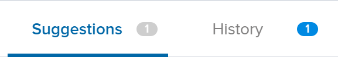
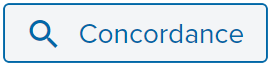

Translating Dash¶
Translations of all Dash products are managed courtesy of Transifex, which offers its own detailed documentation of all functions and features. Within Transifex, Dash maintains an organization which contains multiple projects and one team of translators assigned to all of the projects. Each project is assigned with one or more target languages for translation by the project maintainer. When a translator joins the team, they are able to choose the languages they feel able to translate. They can then work on any projects specifying this language as a target language.
In general, languages with minimal regional variation are to be
translated into the common language (rather than regional) target.
Portuguese, for example, is simply translated into the pt target
language, rather than two separate target languages pt_BR and
pt_PT, for Portuguese as spoken in Brazil and Portugal,
respectively. As Dash grows, these languages may be separated out into
their regional variants by proofreaders, depending on demand. Exceptions
to this rule apply where the same spoken language is written
differently, such as zh_CN and zh_TW for Simplified Chinese and
Traditional Chinese.
Keeping translations consistent over time as multiple translators work on each target language is a very important part of delivering a quality user experience. For this reason, if you come across any Dash-specific terminology such as masternodes, you should use the Concordance search function to see how the term has been translated in the past. Transifex will also provide Suggestions and History if it recognizes a similar string in the database of past translations. Stay consistent with past language use, but also ensure your terminology is up to date with current use!
 {kind=link}
{kind=link}
The following documentation describes the various projects and any special features specific to the programming language in which the product is written.
Dash Core¶
https://www.transifex.com/dash/dash/
This project contains a file named dash_en.ts, which is an export of
all translatable user-facing content in the Dash Core Wallet. Languages with 80% or more of the translations
complete will be integrated in the next release. Note that the software
will often replace placeholders in the text with actual numbers,
addresses or usernames. If you see a placeholder in the source text, it
must also appear in the target text. If it does not, your translation
cannot be used. The Copy source string button can help you copy
everything over, so all you need to do is replace the English words
surrounding the placeholders. You can change the order of the
placeholders as necessary, according to the grammar of your target
language.
- Placeholders
Source:
E&xitTarget:
&BeendenNote that the
&character is placeholder used to indicate a keyboard shortcut in a program menu, and must appear next to the appropriate character in your target language with no adjacent space. Placeholders such as%1or%swill be replaced by the software as it is running to indicate a name or number of something relating to the message. You must insert these placeholders in the grammatically appropriate position in your target text.- Punctuation
Source:
change from %1 (%2)Target:
Wechselgeld von %1 (%2)Note that any brackets
()and punctuation such as full stops.at the end of a sentence must also exist in the target text.
Dash Docs¶
https://www.transifex.com/dash/dash-docs/
This project contains all content from the Dash Documentation hosted at
https://docs.dash.org (probably the site you are reading now). Each
.html page in the documentation appears as a file in the resources
section, named according to the navigation steps required to open the
page. The Dash Documentation is written in a documentation language
called reStructuredText
and built using the open-source Sphinx Documentation Generator. To simplify layout, most of the text has
no markup or code marks at all, but hyperlinks and certain formatting
must be reproduced in the target language as follows:
- Inline literals
Source: Type ``./dash-qt`` to run the file.
Target: Escriba ``./dash-qt`` para correr el archivo.
Note that two backticks
``before and after a word or phrase will cause that text to appear as aninline literal. This is commonly used to highlight code or commands to be typed by the user.- Bold and italic
Source:
To encrypt your wallet, click **Settings** > **Encrypt** wallet.Target:
Para encriptar su billetera, haga click en **Settings** > **Encrypt** billetera.A single
*before and after a word or phrase will render it in an italic font, while a double**will render it in bold.- Internal hyperlinks
Source:
See :ref:`here <sporks>` for a brief introduction to sporks.Target:
Ver :ref:`aquí <sporks>` para una breve introducción a sporksAn internal hyperlink consists of the phrase
:ref:, followed by a single backtick`, followed by some text which must be translated, followed by angle brackets with the link target< >, followed by another backtick`. Translate the text, but do not translate the text inside the angle brackets.- External hyperlinks
Source:
The `official Dash website <https://www.dash.org>`_ also provides a list of major exchanges offering Dash.Target:
El `sitio web oficial de Dash <https://www.dash.org>`_ también proporciona una lista de las principales Casas de cambio o Exchanges que ofrecen Dash.An external hyperlink consists of a single backtick
`, followed by some text which must be translated, followed by angle brackets with the link target< >, followed by another backtick and a single or double underscore:`_or`__. Translate the text, but do not translate the hyperlink (unless you want to link to a version of the page in the target language).
Dash Graphics¶
https://www.transifex.com/dash/dash-graphics/
Dash visual products such as infographics, flyers and conference handouts are produced using Adobe InDesign, Adobe Illustrator or Microsoft Word and are available for use in the Marketing section of the Dash Documentation. It is important to view the finished English layout during translation in order to understand the context of the text you are translating. For example, many words should be translated differently depending if they are a heading, a sentence or an item in a diagram.
Because these proprietary file formats are not easily handled by Transifex, the language content is exported to a text or Microsoft Excel file and uploaded to Transifex for processing. If you translate Dash Graphics, please send an email to leon.white@dash.org or @strophy on Discord when you are finished to request layout in the visual design.
Dash iOS Wallet¶
https://www.transifex.com/dash/dash-mobile-wallets/
All language content from the Dash iOS Wallet are available for translation in this project. Please have a device running the iOS wallet available during translation to understand the context of the text you are translating. Note that any placeholders in the source text segment must also appear in the target language, similar to the instructions above for Dash Core Wallet.
Dash Android Wallet¶
https://www.transifex.com/dash/dash-mobile-wallets/
All language content from the Dash Android Wallet are available for translation in this project. Please have a device running the Android wallet available during translation to understand the context of the text you are translating. Note that any placeholders in the source text segment must also appear in the target language, similar to the instructions above for Dash Core Wallet.
Dash Videos¶
https://www.transifex.com/dash/dash-videos/
This section primarily contains language content from Amanda B. Johnson’s popular Dash School video series. Please translate with the videos open in YouTube to properly understand the context of the source text. Once your translation is complete, please send an email to leon.white@dash.org or @strophy on Discord to request inclusion of the subtitles on YouTube.
Dash Website¶
https://www.transifex.com/dash/dash-website/
The Dash website at https://www.dash.org is available for translation in Transifex. Please have the website open while you translate to correctly understand the context of the source text. Once your translation is complete, please send an email to leon.white@dash.org or @strophy on Discord to request a build of your translation onto the website.